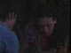
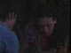
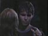

~ ~ Wants ~ ~
~ ~ Info ~ ~
Old Shelle Edits
Edits of Shawn and Belle (as portrayed by Jason Cook and Kirsten Storms). The edits contain all of Shawn's scenes and all of Belle's scenes, not just when they are together.
The edits were made direct to DVD from my tapes. The tapes are mostly 1st generation original recordings - I try to specify when they aren't (whenever the picture quality varies, I show this in the screen captures). The DVDs are in NTSC format so can be played worldwide. They were made using the highest quality mode (except July 26th – August 17th 2001), so each DVD runs for about one hour.
These are the original DVD Shelle edits that I have made. I have since made new replacement edits from original DVD recordings and so are slightly better quality than those listed on this page. View the new edits.
Available Edits - Jump to:
May 16th – June 1st 2001
At dotcom Belle talks to Brady. Shawn watches as she walks across the room (he sees her in slow motion) and he can't stop staring at Belle while Mimi tries to talk to him.
Screencaps - click on images to enlarge
June 4th – June 15th 2001
Shawn kisses Chloe, making Belle and Philip jealous.
Screencaps - click on images to enlarge
June 19th – July 3rd 2001
Shawn and Belle tell Philip and Chloe about their date.
Screencaps - click on images to enlarge
July 3rd – July 13th 2001
Belle and Chloe continue getting ready for the dance and talk about love.
Screencaps - click on images to enlarge
July 13th – July 23rd 2001
Belle and Chloe watch the tape Philip made to apologize.
Screencaps - click on images to enlarge
July 23rd – July 25th 2001 (DVD lasts 24mins)
The trial continues and part of Mimi and Jan's 'punishment' is having to go on the school trip.
Screencaps - click on images to enlarge
July 26th – August 17th 2001 (DVD lasts 2 hours – also includes Tropical Temptation promos)
Brady drives Belle, Shawn and Chloe to the airport.
Screencaps - click on images to enlarge
August 21st – August 29th 2001
Shawn tries to hold Belle’s hand at the camp fire and she jumps up.
Screencaps - click on images to enlarge
August 30th - September 5th 2001
Shawn and Belle go for a night-time swim.
Screencaps - click on images to enlarge
September 5th- September 18th 2001
The weather worsens and the teens go to their tents.
Screencaps - click on images to enlarge
September 18th - October 1st 2001
Paul cuts the rope, trapping the teens in the pit.
Screencaps - click on images to enlarge
October 1st - October 10th 2001
Paul throws Belle back into the pit.
Screencaps - click on images to enlarge
October 10th - October 18th 2001
Shawn and Belle kiss in the cleaning closet.
Screencaps - click on images to enlarge
October 19th - October 26th 2001
Shawn and Belle go to the Horton house. They flirt and Belle tells Shawn he is clueless. They give the ruby to Alice.
Screencaps - click on images to enlarge
October 29th - November 5th 2001
Belle tells Shawn about her argument with Marlena and they talk about waiting to have sex and then argue about Jan.
Screencaps - click on images to enlarge
November 5th - November 14th 2001
Belle talks to her family about her feelings for Shawn. She is worried that she likes him more than he likes her.
Screencaps - click on images to enlarge
November 14th - November 29th 2001
Chloe tells Belle about her feelings for Philip.
Screencaps - click on images to enlarge
November 30th - December 11th 2001
At school the teens talk about the events of last night.
Screencaps - click on images to enlarge
There is a weather warning graphic over some scenes.
One scene is poor quality.
One episode is 2nd generation and this episode also has a details of a time change over the picture.
Shawn and Belle get trapped in the elevator.
Shawn finds out about JT’s accident and Belle comforts him.
Shawn falls asleep in class.
Belle suggests JT might have been kidnapped. Shawn is thrilled at this idea and kisses Belle's temple.
Chloe tells Belle what she saw at the river, and they tell Hope.

One scene is 2nd/3rd? generation. Some other scenes from the same episode have a weather graphic.
Belle and Brady argue about Marlena
Philip tells Belle she should ask Shawn to the last blast
Belle is angry when everyone chants 'gigantor' at Susan.
Philip continues his matchmaking and tells Shawn he should invite Belle to the dance. Hope calls Shawn to tell him that JT is coming home!
Shawn and Belle go shopping for gifts for JT.
Shawn invites Belle to the last blast and then they bump into Stefano as he leaves Salem.
They head back for a welcome home party at the Brady house where they sing 'Danny Boy' and later and Shawn tells Belle that every guy in school wants to date her.
Belle and Chloe arrive at the penthouse after a shopping trip. Mimi calls and is upset that Belle didn’t tell her about Shawn's invitation.
Belle makes peace with Mimi and they with Shawn they invite her to go to the dance with them.
Chloe tells the others about her mysterious summer job.
Belle and Mimi talk about Jan and the dance.
Shawn is worried the date will change things between him and Belle. He talks to Hope at the pub.
Belle and Chloe get ready for the dance and Belle asks Chloe about kissing.
Shawn worries that Mimi has been spending too much time with Jan.
Shawn and Philip pick up Belle and Chloe at the penthouse.
Everyone arrives at the last blast.
Shawn and Belle dance in the competition (fantasy sequence).
The operagirl.net photo of Chloe covered in soap suds is shown on the screen.
The aftermath of the dance at the school.
Shawn and Belle go the Brady pub and look at the operagirl.net website.
Shawn and Belle almost kiss outside the pub, but Mimi interrupts
Mimi confesses what she did.
Shawn remembers the dance and smoke comes out of the mysterious can
Chloe opens the can.
Shawn, Belle and Chloe go to the train station and open a locker, finding photos of Alice Horton's ruby.
Mimi and Jan’s trial starts (Mimi's Mom is about as different to Bonnie as is possible!).
The teens go to dotcom. Paul Mendez follows them and lurks around.
Everyone packs for the trip and Belle talks to Marlena about Shawn.
On board the plane, Belle and Mimi talk, and make up.
At the hotel, Shawn, Belle and Mimi look at the treasure map.
Mimi falls overboard during the boat ride to the island and Belle is knocked out. Belle tells Mimi about her almost kiss with Shawn and Shawn talks to Paul.
The tent collapses on Shawn and Belle, and they almost kiss but are interrupted by Paul.
Shawn and Belle swim in the lagoon and finally have their first kiss!
Shawn, Belle, Philip and Mimi go swimming and Belle tells Mimi about the kiss.
Shawn dives for the clue and gets his hand stuck.
Shawn and Belle visit the lagoon again.
They move back to the beach where Shawn has a blanket, and almost have sex! Mimi and Kevin interrupt and then separately lecture them on safe sex.
Belle tries to cheer up Philip who is upset over Chloe.
Shawn goes rock-climbing and manages to gets the next clue.
Scenes from one episode are poor quality.
They return to the beach and again almost have sex but Shawn decides to stop.
The teens hang around by the campfire, limbo and play tug of war. Paul overhears Shawn and Belle saying they will look for the ruby without him.
Shawn talks to Jan about Jason and her parents.
Shawn catches Jason drinking and they argue.
Philip and Belle talk about Chloe.
Shawn and Belle discuss having sex.
Shawn fights Paul after finding him with Jan (after the rape.)
Shawn comforts Jan while Paul runs away, knocking Belle over.

 

A few scenes from one episode are 2nd generation (although it is dark and hard to see anything anyway.)
Shawn and Philip head off looking for the cavern. Belle follows them.
Philip asks about Shawn and Belle's relationship as she eavesdrops on them, then shows herself. Meanwhile Paul spies on the group.
Belle sees the bird shaped rock and they find the pit as Shawn falls in, pretending to be hurt.
Belle has a crazy dream set on the beach - too strange to try and describe!
Shawn goes back into the pit and finds the ruby.
Paul creeps up with a knife and demands the ruby. They all fight.
They discover a skeleton.
Shawn and Philip save Belle from a rubber snake.
They find an opening in the side of the pit. The boys try to crawl through but Belle calls them back.
Belle then crawls in and knocks a board on the side causing the tunnel to partially collapse. She freaks out after seeing a 'prehistoric monster' and the boys pull her out.
They all head back into the tunnel and a huge spider appears on Philip's back.
The tunnel floods and they slide back down into the pit.
Brady has some flashbacks of Belle.
The water level rises. Belle manages to climb up and is pulled out by Paul.
Shawn gives Paul the ruby.

One scene is 2nd generation.
Brady, Chloe and Mimi arrive. Brady and Paul fight until Paul runs away.
Brady rescues the teens from the pit then he and Chloe try to resuscitate Philip.
Victor and Nicole arrive by helicopter and take Philip away.
Shawn goes back into the pit to look for the ruby.
Shawn comforts Belle as she worries.
They all arrive at the hospital and Shawn calls home.
Mimi and Belle talk about Jan as Shawn defends her.
They visit Philip and he has a strange dream of the future.
Philip wakes up.

A few scenes are poor quality.
John arrives and spends time with Brady and Belle, while Shawn talks to Jan.
Belle talks to Marlena on the phone.
Paul dies. The police take Jan away and Shawn follows.
They all travel back to Salem and arrive at a surprise party at the pub. It is also Marlena's birthday.

Shawn rushes away from Belle and Mimi at .com after Philip knocks Jan over.
Belle sees Shawn and Jan hugging and then leaving together.
Shawn and Jan talk about the rape.
Shawn and Belle kiss in the linen closet at the hospital but Marlena catches them on the way out. Belle and Marlena argue.


Shawn talks to Bo while Belle talks to Marlena.
Mimi tells Belle to play hard to get. Jason and Shawn discuss Jan.
Belle makes Shawn jealous at the basketball game.
The Black family eat marshmallows and all get along.


One episode is 2nd generation.
Shawn talks to Bo and Hope about Jan.
Shawn asks Belle to the movies for their 2nd date.
Shawn and Belle go shopping and kiss in Salem Place but are interrupted by Mimi and then Alice.
Jan is almost hit by a car so Shawn takes her to the hospital.
Belle and Shawn do a little Brady/Chloe matchmaking.


Some scenes are 2nd generation.
Shawn and Belle have a snowball fight and kiss in the park.
They go to the movies but the film gets cancelled so they go to lookout point and make out in the truck.
Later they join their parents at Tuscany.


Belle and Chloe go to the penthouse and talk about Philip and Cynthia. Brady comes downstairs without clothes on.
Belle talks to Marlena about Shawn and almost having sex.
Cynthia and Shawn talk about something that happened between them two years ago...
Shawn picks up Belle and they drive to Lexie's 'Mother of the Year' party for Hope.
They arrive at the party and dance a bit.


{kind=link}
{kind=link}
{kind=link}
{kind=link}
{kind=link}
{kind=link}
{kind=link}
{kind=link}
{kind=link}
{kind=link}
{kind=link}
{kind=link}
{kind=link}
{kind=link}
{kind=link}
{kind=link}
{kind=link}
{kind=link}
{kind=link}
{kind=link}
{kind=link}
{kind=link}
{kind=link}
{kind=link}
{kind=link}
{kind=link}
{kind=link}
{kind=link}
{kind=link}
{kind=link}
{kind=link}
{kind=link}
{kind=link}
{kind=link}
{kind=link}
{kind=link}
{kind=link}
{kind=link}
{kind=link}
{kind=link}